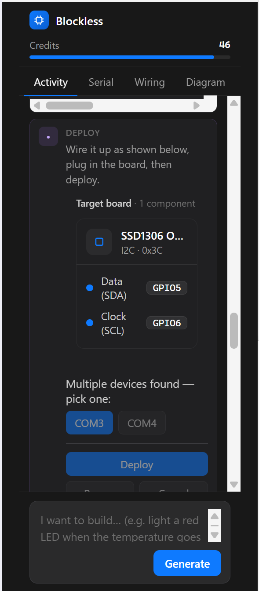

$ blockless new "desk-thermometer"
Software has Cursor and Lovable. Hardware deserves the same low-floor on-ramp: describe the idea, and it's selected, wired, coded, flashed, and debugged 鈥?then connected to modules and fulfillment.
// the shift
| Digital world | What already changed |
|---|---|
| Writing code | From autocomplete to agents editing multiple files, running tasks, and fixing errors |
| Web / apps | From hand-coding pages to generating prototypes and full pages from a sentence |
| Images / video | From operating tools to generating assets from natural language |
| Hardware | Still part selection, wiring, library hunting, flashing, serial watching |
The next generation of creation tools shouldn't stop at the screen. For AI to truly reach the physical world, it has to turn ideas into running devices.
// the pain
Today's barrier isn't imagination. It's getting the thing to actually run.
// why ai hardware is harder
| Gap | Symptom | Consequence |
|---|---|---|
| Driver knowledge | MCUs, sensors, library versions, and firmware capabilities are deeply fragmented | The LLM hallucinates APIs and install steps |
| Execution rights | Flashing, serial, and file upload need access to the user's computer and board | Pure web demos can't close the loop |
| State awareness | Modules don't announce "who I am, what I do, where I'm wired" | AI guesses pins, protocols, and error causes |
The core isn't "make AI write some code." It's giving AI a hardware runtime that can read packages, connect to boards, see feedback, and identify modules.
// market & ecosystem evidence
The bigger the ecosystem and the more devices and libraries, the more newcomers need a single on-ramp that threads the whole chain together.
Sources: Arduino Open Source Report 2024 路 Schematik announcement 路 Kickstarter Stats
// the real data flow behind one sentence
hardware_tags 鈥?display, sensing, comms, actuators.package.json, READMEs, driver context, deps, chip support, firmware requirements..mpk and writes MANIFEST.JSON 鈥?downloadable, pushable, editable online, or published to the store.mpremote 鈥?installs deps, uploads, runs, reads serial, auto-repairs.The sentence is just the entrance. The moat is behind it: hardware profiling, driver retrieval, app packaging, local execution, and feedback-driven repair.
// the product, live
0x3C 鈥?a real component, not a hallucination.GPIO5, SCL 鈫?GPIO6, auto-mapped.COM3 / COM4 鈫?one-click Deploy.No datasheet, no manual pin-mapping, no flashing toolchain. Speak 鈫?wire 鈫?deploy.

// tech stack overview
| Layer | Role | Key implementation |
|---|---|---|
| Agent / Skill | Decompose language into hardware tasks and steps | Project gen, error repair, Arduino/PDF driver conversion, test gen |
| Knowledge | Let AI use real drivers, not guesses | Package Intelligence, uPyPI/GraftSense, driver context, deps, chips/fw tags |
| Execution | Let AI actually touch the board | Thonny plugin, VS Code extension, mpremote run/exec/fs, serial logs |
| App runtime | Installable, upgradable, rollback-able | uPyOS 0.9.0, LVGL, D-Shell, .mpk, MANIFEST.JSON |
| Device profile | Know real hardware capabilities | device_fingerprint, device_profiles, hardware_tags, module registry |
| Delivery | Turn a demo into a kit | GraftSense modules, GraftPort boards, Dev Kit, production SOP |
The value: turning AI from "the person who writes code" into "the operator who delivers a hardware project."
// package intelligence / ide
/lib via mpremote.mpremote, and disconnected boards.Our AI doesn't invent drivers 鈥?it calls a structured, installable, verifiable MicroPython package ecosystem.
// the local execution loop
| Loop step | Arduino / C path | Our MicroPython path |
|---|---|---|
| Write code | .ino implicit rules, multi-file stitching, complex C/C++ deps | Python is clean-structured 鈥?easier for AI to generate and fix |
| Install deps | Manual lib hunting, copy-paste, version conflicts | Package search + in-IDE install + automatic dep handling |
| Run feedback | Compile, flash, serial monitor scattered; each change means a wait | mpremote run/exec/fs 鈥?upload, run, read logs in one chain |
| Auto-repair | User reads serial and docs themselves | Agent reads error output, edits code, re-runs, re-verifies |
The key difference isn't "generating the first version." It's pulling device feedback into the agent loop.
// upyos / upystore architecture
| Component | Design | Value |
|---|---|---|
| uPyOS 0.9.0 | MicroPython + LVGL on ESP32 / ESP32-S3 | Desktop launcher, app install/uninstall, settings, WiFi management |
| D-Shell | A hardware terminal device running uPyOS | Like an Android phone 鈥?the primary host for uPyOS |
| .mpk | A uPyOS app install package 鈥?a fixed-structure archive | Like an APK 鈥?hardware apps install, update, distribute |
| MANIFEST.JSON | Declares app name, version, entry, publisher | Like an Android manifest 鈥?apps recognizable to the system |
| app_index.json | Device-side store entry, with a stable field structure | Shipped devices pull the app index 鈥?compatibility can't break |
V2 goes further: device_fingerprint (anonymous ID), device_profiles (hardware picture), hardware_tags (app deps), and a module registry of chips, interfaces, capabilities, package candidates, and BLE broadcast info.
// competitive landscape
| Dimension | Web-class AI hardware tools | Us |
|---|---|---|
| Output | Code, wiring diagrams, BOM, tutorials | Runnable MicroPython project + module combo + local flash & debug |
| Driver source | Model-generated or public samples | Package Intelligence, real packages, README, package.json, driver context |
| Execution loop | Mostly stops at generation and explanation | mpremote connects the board, reads serial, auto-repairs |
| Abstraction | AI picks components and pins | Active modules self-describe; the system reads capability, then generates |
| Delivery | User still buys, solders, debugs | Modules, kits, and small-batch production SOP plug into fulfillment |
Our bet: AI hardware needs not just a "design tool," but a runtime, a module ecosystem, and a delivery chain.
// distribution: makerspaces, universities, fulfillment
| Channel | What it gives us | Why it lands |
|---|---|---|
| FabLab / makerspaces | Began at MIT's Center for Bits and Atoms 鈥?a global maker-education and digital-fab network with deep US roots | A ready-made surface: curriculum, technical docs, projects, community |
| Universities | ECE/CS programs, capstones, and hackathons need a fast idea鈫抮unning-device path | "Build hardware from a sentence" drops into coursework, labs, competitions |
| Maker community | Hackster, Adafruit/SparkFun ecosystem, indie hardware creators | Organic top-of-funnel for both the tool and the kits |
| Fulfillment | ESP32, sensor modules, PCB/SMT, fast small-batch turnaround | Validated prototypes become kits and products |
Makerspaces and universities do education and prototype validation; fulfillment turns validated designs into kits and products.
// graftsense / port / dev kit delivery
| Layer | Specifics | Capability it shows |
|---|---|---|
| GraftSense | Sensor module line, design spec based on Grove; an RCWL-9623 ultrasonic transceiver template is done | A real module product line, not just software demos |
| GraftPort | Expansion-board design spec, cost and sourcing sheet | Standardizes modules onto boards and into teaching |
| Dev Kit | Dev Kit boxes, cost/sourcing table, pricing table, flyer | Packaged delivery for education, competitions, courses |
| Production SOP | Design, validation, drivers, docs, small-batch production, product page, promotion | A process from prototype to product page and small batch |
The loop isn't "sell an AI app": Skill generates the project, uPyStore distributes the app, GraftSense/Port/Dev Kit make it buyable, assemblable, deliverable.
// vision
Not another code generator 鈥?the next-generation on-ramp for hardware creation:
mpremote let the agent actually run, read feedback, and auto-repair.In one sentence: from idea to hardware that runs, reuses, and ships.